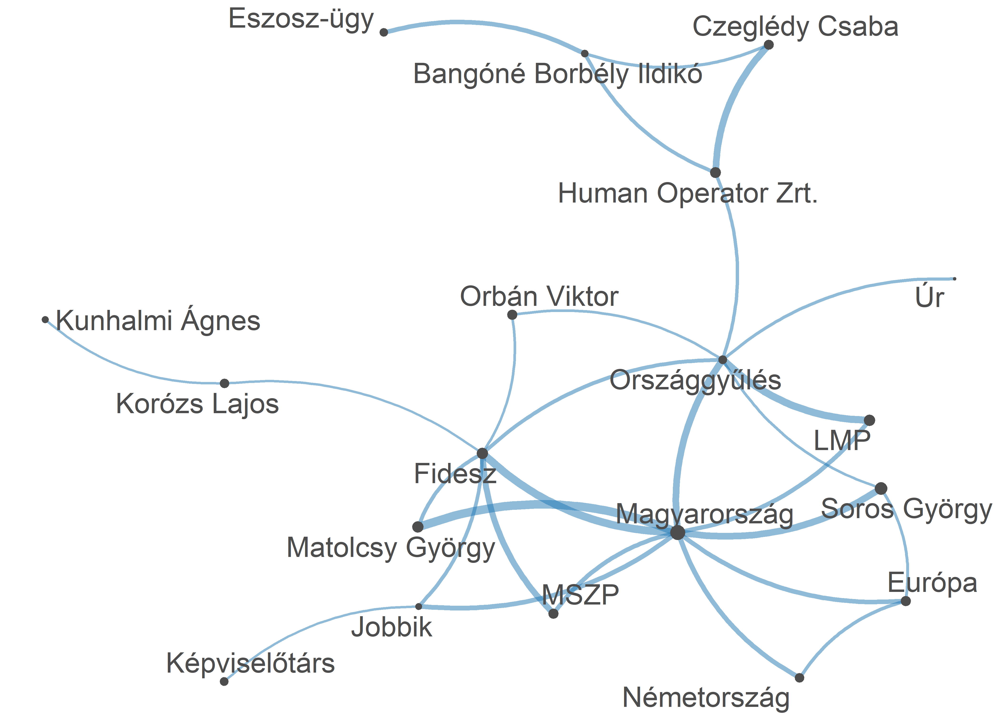

11 NLP és névelemfelismerés
11.1 Fogalmi alapok
A természetes-nyelv feldolgozása (Natural Language Processing – NLP) a nyelvészet és a mesterséges intelligencia közös területe, amely a számítógépes módszerek segítségével elemzi az emberek által használt (természetes) nyelveket. Azaz képes feldolgozni különböző szöveges dokumentumok tartalmát, kinyerni a bennük található információkat, kategorizálni és rendszerezni azokat. A névelem-felismerés többféle módon is megoldható, így például felügyelt tanulással, szótár alapú módszerekkel vagy kollokációk elemzésével. A névelem-felismerés körében két alapvető módszer alkalmazására van lehetőség. A szabályalapú módszer alkalmazása során előre megadott adatok alapján kerül kinyerésre az információ (ilyen szabály például a mondatközi nagybetű mint a tulajdonnév kezdete). A másik módszer a statisztikai tanulás, amikor a gép alkot szabályokat a kutató előzetes mintakódolása alapján. A névelemfelismerés során nehézséget okozhat a különböző névelemosztályok közötti gyakori átfedés, így például ha egy adott szó településnév és vezetéknév is lehet. Fontos különbséget tenni a névelem-felismerés és a tulajdonnév-felismerés között. A névelem-felismerésbe beletartozik minden olyan kifejezés, amely a világ valamely entitására egyedi módon (unikálisan) referál. Ezzel szemben a tulajdonnév-felismerés, kizárólag a tulajdonnevekre koncentrál.(Üveges 2019; Vincze 2019)
A fejezetben részletesen foglalkozunk a lemmatizálással, ami a magyar nyelvű szövegek szövegelőkészítésnek fontos eleme (erről lásd bővebben a Korpuszépítés és szövegelőkészítés fejezetet), és a névelem-felismeréssel (Named Entity Recognition – NER). Névelemnek azokat a tokensorozatokat nevezzük, amelyek valamely entitást egyedi módon jelölnek. A névelem-felismerés az infomációkinyerés részterülete, melynek lényege, hogy automatikusan felismerjük a strukturálátlan szövegben szereplő tulajdonneveket, majd azokat kigyűjtsük, és típusonként (például személynév, földrajzi név, márkanév, stb.) csoportosítsuk. Bár a tulajdonnevek mellett névelemnek tekinthetők még például a telefonszámok vagy az e-mail címek is, a névelem-felismerés leginkább mégis a tulajdonnevek felismerésére irányul. A névelem-felismerés a számítógépes nyelvészetben a korai 1990-es évektől kezdve fontos feladatnak és megoldandó problémának számít.
A magyar nyelvű szövegekben a tulajdonnevek automatikus felismerésére jelen kötetben a huSpaCy 51 elemző használatát mutatjuk be, amely képes mondatok teljes nyelvi elemzésére (szótő, szófajok, stb.) illetve névelemek (például személynevek, helységek) azonosítására is folyó szövegben, emellett alkalmas a magyar nyelvű szövegek lemmatizálására, ami amint azt korábban bemutattuk, a magyar nyelvű szövegek előfeldolgozásának fontos lépése. Bár magyar nyelven más elemzők 52 is képesek a nyers szövegek mondatra és szavakra bontására és szófaji elemzésére, azaz POS-taggelésére (Part of Speech-tagging) továbbá a mondatok függőségi elemzésére, két okból döntöttünk a huSpaCy használata mellett. Egyrészt ez a illeszkedik a nemzetközi akadémia és ipari szférában legszélesebb körben használt SpaCy 53 keretrendszerbe, másrészt a reticulate 54 csomag segítségével viszonylag egyszerűen használható R környezetben is, és nagyon jól együttműködik a kötetben rendszeresen használt quanteda csomaggal.
11.2 A spacyr használata
library(reticulate)
library(spacyr)
library(dplyr)
library(stringr)
library(quanteda)
library(quanteda.textplots)
library(HunMineR)A spaCy használatához Python környezet szükséges, az első használat előtt telepíteni kell a számítógépünkre egy Anaconda alkalmazást: https://www.anaconda.com/. Majd az RStudio/Tools/Global Options menüjében be kell állítanunk a Pyton interpretert, azaz meg kell adnunk, hogy a gépünkön hol található a feltelepített Anaconda. Ezt csak az első használat előtt kell megtennünk, a későbbiekben innen folytathatjuk a modell betöltését.
Ezt követően a már megszokott módon installálnunk kell a reticulate és a spacyr 55 csomagot és telepítenünk a magyar nyelvi modellt. A Pythonban készült spacy-t a spacyr::spacy_install() paranccsal kell telepíteni. A következő lépésben létre kell hoznunk egy conda környezetet, és a huggingface-ről be kell töltenünk a magyar modellt.
conda_install(envname = "spacyr", "https://huggingface.co/huspacy/hu_core_news_lg/resolve/v3.5.2/hu_core_news_lg-any-py3-none-any.whl" , pip = TRUE)11.2.1 Lemmatizálás, tokenizálás, szófaji egyértelműsítés
Ezután a spacy_parse() függvény segítségével lehetőségünk van a szövegek tokenizálására, szótári alakra hozására (lemmatizálására) és szófaji egyértelműsítésére.
txt <- c(d1 = "Budapesten süt a nap.",
d2 = "Tájékoztatom önöket, hogy az ülés vezetésében Hegedűs Lorántné és Szűcs Lajos jegyzők lesznek segítségemre.")
parsedtxt <- spacy_parse(txt)
print(parsedtxt)
#> doc_id sentence_id token_id token lemma pos entity
#> 1 d1 1 1 Budapesten Budapest PROPN LOC_B
#> 2 d1 1 2 süt süt VERB
#> 3 d1 1 3 a a DET
#> 4 d1 1 4 nap nap NOUN
#> 5 d1 1 5 . . PUNCT
#> 6 d2 1 1 Tájékoztatom tájékoztat VERB
#> 7 d2 1 2 önöket ön NOUN
#> 8 d2 1 3 , , PUNCT
#> 9 d2 1 4 hogy hogy SCONJ
#> 10 d2 1 5 az az DET
#> 11 d2 1 6 ülés ülés NOUN
#> 12 d2 1 7 vezetésében vezetés NOUN
#> 13 d2 1 8 Hegedűs Hegedűs PROPN PER_B
#> 14 d2 1 9 Lorántné Lorántné PROPN PER_I
#> 15 d2 1 10 és és CCONJ
#> 16 d2 1 11 Szűcs Szűcs PROPN PER_B
#> 17 d2 1 12 Lajos Lajos PROPN PER_I
#> 18 d2 1 13 jegyzők jegyző NOUN
#> 19 d2 1 14 lesznek lesz AUX
#> 20 d2 1 15 segítségemre segítség NOUN
#> 21 d2 1 16 . . PUNCTLáthatjuk, hogy az eredmény egy olyan tábla, amely soronként tartalmazza a lemmákat. Mivel az elemzések során legtöbbször arra van szükségünk, hogy egy teljes szöveg lemmáit egy egységként kezeljük, a kapott táblán el kell végeznünk néhány átlakítást. Mivel nekünk a lemmákra van szükségünk, először is töröljük az összes oszlopot a doc_id és a lemma kivételével.
parsedtxt$sentence_id <- NULL
parsedtxt$token_id <- NULL
parsedtxt$token <- NULL
parsedtxt$pos <- NULL
parsedtxt$entity <- NULL
parsedtxt
#> doc_id lemma
#> 1 d1 Budapest
#> 2 d1 süt
#> 3 d1 a
#> 4 d1 nap
#> 5 d1 .
#> 6 d2 tájékoztat
#> 7 d2 ön
#> 8 d2 ,
#> 9 d2 hogy
#> 10 d2 az
#> 11 d2 ülés
#> 12 d2 vezetés
#> 13 d2 Hegedűs
#> 14 d2 Lorántné
#> 15 d2 és
#> 16 d2 Szűcs
#> 17 d2 Lajos
#> 18 d2 jegyző
#> 19 d2 lesz
#> 20 d2 segítség
#> 21 d2 .Majd a doc_id segítségével összakapcsoljuk azokat a lemmákat, amelyek egy dokumentumhoz tartoznak és az egyes lemmákat ; segítsével elválasztjuk elmástól.
parsedtxt_2<- parsedtxt %>%
group_by(doc_id) %>%
mutate(text = str_c(lemma, collapse = ";"))
parsedtxt_2
#> # A tibble: 21 × 3
#> # Groups: doc_id [2]
#> doc_id lemma text
#> <chr> <chr> <chr>
#> 1 d1 Budapest Budapest;süt;a;nap;.
#> 2 d1 süt Budapest;süt;a;nap;.
#> 3 d1 a Budapest;süt;a;nap;.
#> 4 d1 nap Budapest;süt;a;nap;.
#> 5 d1 . Budapest;süt;a;nap;.
#> 6 d2 tájékoztat tájékoztat;ön;,;hogy;az;ülés;vezetés;Hegedűs;Lorántné;és;Szűcs;Lajos;jegyző;lesz;segítség;.
#> # ℹ 15 more rowsMivel az eredeti táblában minden lemma az eredeti az azt tartalmazó dokumentum id-jét kapta meg, az így létrehozott táblánkban a szövegek annyiszor ismétlődnek, ahány lemmából álltak. Ezért egy következő lépésben ki kell törtölnünk a feleslegesen ismétlődő sorokat. Ehhez először töröljük a lemma oszlopot, hogy a sorok tökéletesen egyezzenek.
parsedtxt_2$lemma <- NULL
parsedtxt_2
#> # A tibble: 21 × 2
#> # Groups: doc_id [2]
#> doc_id text
#> <chr> <chr>
#> 1 d1 Budapest;süt;a;nap;.
#> 2 d1 Budapest;süt;a;nap;.
#> 3 d1 Budapest;süt;a;nap;.
#> 4 d1 Budapest;süt;a;nap;.
#> 5 d1 Budapest;süt;a;nap;.
#> 6 d2 tájékoztat;ön;,;hogy;az;ülés;vezetés;Hegedűs;Lorántné;és;Szűcs;Lajos;jegyző;lesz;segítség;.
#> # ℹ 15 more rowsMajd a következő lépésben a dplyr csomag distinct függvénye segítségével - amely mindig csak egy-egy egyedi sort tart meg az adattáblában - kitöröljük a felesleges sorokat.
parsedtxt_3 <-distinct(parsedtxt_2)
parsedtxt_3
#> # A tibble: 2 × 2
#> # Groups: doc_id [2]
#> doc_id text
#> <chr> <chr>
#> 1 d1 Budapest;süt;a;nap;.
#> 2 d2 tájékoztat;ön;,;hogy;az;ülés;vezetés;Hegedűs;Lorántné;és;Szűcs;Lajos;jegyző;lesz;segítség;.Az így létrejött adattáblában a text mezőben már nem az eredeti szöveg, hanem annak lemmái szerepelnek. Ha az adattáblát elmentjük, a lemmákon végezhetjük tovább az elemzéseket.
11.2.2 Saját .txt vagy .csv fájlokban elmentett szövegek lemmatizálása
Saját .txt vagy .csv fájlok lemmatizálásához a fájlokat a kötetben bemutatott módon olvassuk be egy adattáblába. (ehhez lásd a Függelék, Munka saját adatokkal alfejezetét) Az alábbi példában egy, a HunMineR csomagban lévő kisebb korpuszon mutatjuk be az ilyen fájlok lemmatizálását. Fontos kiemelni, hogy a nagyobb fájlok feldolgozása elég sok időt (akár több órát) is igénybe vehet.
A beolvasott szövegeket először quanteda korpusszá alakítjuk. Majd a spacy_parsed() függvény segítségével a fentebb bemutatottak szerint elvégezzük a lemmatizálást.
df_corpus <- corpus(df)
parsed_df <- spacy_parse(df_corpus)
head(parsed_df, 5)
#> doc_id sentence_id token_id token lemma pos entity
#> 1 text1 1 1 VONA VONA PROPN
#> 2 text1 1 2 GÁBOR GÁBOR PROPN
#> 3 text1 1 3 ( ( PUNCT
#> 4 text1 1 4 Jobbik Jobbik PROPN PER_B
#> 5 text1 1 5 ): ): PUNCTparsed_df$sentence_id <- NULL
parsed_df$token_id <- NULL
parsed_df$token <- NULL
parsed_df$pos <- NULL
parsed_df$entity <- NULLparsed_df_2<- parsed_df %>%
group_by(doc_id) %>%
mutate(
text = str_c(lemma, collapse = " "))
parsed_df_2$lemma <- NULL
parsed_df_3 <-distinct(parsed_df_2)
head(parsed_df_3, 5)
#> # A tibble: 5 × 2
#> # Groups: doc_id [5]
#> doc_id text
#> <chr> <chr>
#> 1 text1 "VONA GÁBOR ( Jobbik ): Tisztelt Elnök Úr ! tisztelt Országgyűlés ! a tegnapi nap 11 hely tart időközi önkormányzati válas…
#> 2 text2 "dr. SCHIFFER ANDRÁS ( LMP ): Köszön a szó , elnök úr . tisztelt Országgyűlés ! múlt hét napvilág lát a hír , hogy az ille…
#> 3 text3 "dr. SZÉL BERNADETT ( LMP ): Köszön a szó , elnök úr . tisztelt Államtitkár Úr ! van egy ország Európa , amely pusztító te…
#> 4 text4 "TÓBIÁS JÓZSEF ( MSZP ): Köszön a szó , elnök úr . tisztelt Ház ! tisztelt Képviselőtárs ! az hisz , az mindannyi egyetért…
#> 5 text5 "SCHMUCK ERZSÉBET ( LMP ): Köszön a szó , elnök úr . tisztelt Országgyűlés ! hét , hónap óta rágódik az ország a Magyar Ne…A nagyobb fájlok lemmatizálásának eredményét célszerű elmenteni a kötetben ismert módok egyikén például RDS vagy .csv fájlba.
11.2.3 Névelemfelismerés és eredményeinek vizualizálása
A szövegekből történő névelemfelismeréshez ugyancsak egy adattáblára és egy belőle kialakított quanteda korpuszra van szükségünk. A következő példában mi az előzőleg léterhozott lemmatizált adattáblával dolgozunk, de a névelemfelismerés működik nyers szövegeken is.
A léterhozott korpuszon a spacy_parse() függvény argumentumában kell jeleznünk, hogy az entitások felismerését szeretnénk elvégezni (entity = TRUE). Az eredménytáblában láthatjuk, hogy egy új oszlopban minden névelem mellett megkaptuk annak típusát (PER = személynév, LOC = helynév, ORG = szervezet, MISC = egyéb).
A corpus() függvény egyedi dokumentum neveket vár, ezért átnevezzük először a doc_id értékeit.
parsed_df_3 <- parsed_df_3 %>%
mutate(doc_id = paste(doc_id, row_number(), sep = "-"))
lemma_corpus <- corpus(parsed_df_3)
parsedtxt <- spacy_parse(lemma_corpus, entity = TRUE)
entity_extract(parsedtxt, type = "all")
#> doc_id sentence_id entity entity_type
#> 1 text1-1 1 Jobbik PER
#> 2 text1-1 1 Úr PER
#> 3 text1-1 1 Országgyűlés PER
#> 4 text1-1 3 Jobbik ORG
#> 5 text1-1 3 Recsken LOC
#> 6 text1-1 3 Ózd LOC
#> 7 text1-1 7 Recsken LOC
#> 8 text1-1 7 Fidesz ORG
#> 9 text1-1 8 Ózd_Janiczak_Dávid PER
#> 10 text1-1 9 Jobbik ORG
#> 11 text1-1 11 Janiczak_Dávid PER
#> 12 text1-1 11 Jobbik ORG
#> 13 text1-1 12 Ózd LOC
#> 14 text1-1 14 Vida_Ildikó PER
#> 15 text1-1 15 Dr._Répássy_Róbert PER
#> 16 text1-1 21 Oroszország LOC
#> 17 text1-1 21 Egyesült_Államok LOC
#> 18 text1-1 21 Ukrajna LOC
#> 19 text1-1 22 Gorbacsov PER
#> 20 text1-1 23 Magyarország ORG
#> 21 text1-1 23 Magyarország LOC
#> 22 text1-1 25 Gyurcsány_Ferenc PER
#> 23 text1-1 26 Dr._Rétvári_Bence PER
#> 24 text1-1 27 Jobbik ORG
#> 25 text1-1 29 Fidesz-KDNP ORG
#> 26 text1-1 29 Vida_Ildikó PER
#> 27 text1-1 31 Kovács_Béla PER
#> 28 text1-1 32 Kovács_Béla PER
#> 29 text1-1 34 Isten PER
#> 30 text1-1 36 Magyarország LOC
#> 31 text1-1 37 Magyarország LOC
#> 32 text1-1 42 Magyarország ORG
#> 33 text1-1 44 Magyarország LOC
#> 34 text1-1 48 Jobbik ORG
#> 35 text2-1 1 dr._SCHIFFER_ANDRÁS ORG
#> 36 text2-1 1 LMP ORG
#> 37 text2-1 2 Országgyűlés PER
#> 38 text2-1 2 Eurat MISC
#> 39 text2-1 2 Orbán-Putyin-paktum MISC
#> 40 text2-1 3 L._Simon_László PER
#> 41 text2-1 5 Paks LOC
#> 42 text2-1 11 Paks ORG
#> 43 text2-1 12 Magyarország LOC
#> 44 text2-1 13 Westinghouse MISC
#> 45 text2-1 14 Paksi_Atomerőműbe ORG
#> 46 text2-1 15 Ukrajna LOC
#> 47 text2-1 17 Magyarország LOC
#> 48 text2-1 17 Európa-USA ORG
#> 49 text2-1 18 Magyarország LOC
#> 50 text2-1 18 Magyarország LOC
#> 51 text2-1 19 Magyarország LOC
#> 52 text2-1 20 Magyarország LOC
#> 53 text2-1 21 Magyarország LOC
#> 54 text2-1 23 Magyarország LOC
#> 55 text2-1 25 Európai_Unió ORG
#> 56 text2-1 25 Amerika LOC
#> 57 text2-1 29 LMP ORG
#> 58 text3-1 1 dr._SZÉL_BERNADETT ORG
#> 59 text3-1 1 LMP PER
#> 60 text3-1 2 Államtitkár_Úr PER
#> 61 text3-1 2 Európa LOC
#> 62 text3-1 3 Nyugat-Európa LOC
#> 63 text3-1 9 Magyarország LOC
#> 64 text3-1 16 Németország LOC
#> 65 text3-1 20 Magyarország LOC
#> 66 text3-1 30 LMP ORG
#> 67 text3-1 35 LMP ORG
#> 68 text3-1 36 LMP ORG
#> 69 text3-1 41 LMP ORG
#> 70 text3-1 41 Országgyűlés ORG
#> 71 text3-1 45 Ház ORG
#> 72 text3-1 46 LMP ORG
#> 73 text4-1 1 TÓBIÁS_JÓZSEF PER
#> 74 text4-1 1 MSZP PER
#> 75 text4-1 2 Ház PER
#> 76 text4-1 2 Képviselőtárs PER
#> 77 text4-1 4 Magyarország LOC
#> 78 text4-1 5 Magyar_Tudományos_Akadémia ORG
#> 79 text4-1 5 Magyarország LOC
#> 80 text4-1 10 Ázsia LOC
#> 81 text4-1 10 Európa LOC
#> 82 text4-1 10 Európa LOC
#> 83 text4-1 12 Balog_Zoltán PER
#> 84 text4-1 13 Magyarország LOC
#> 85 text4-1 16 Magyarország LOC
#> 86 text4-1 19 Országgyűlés ORG
#> 87 text4-1 23 MSZP ORG
#> 88 text5-1 1 LMP PER
#> 89 text5-1 2 Országgyűlés PER
#> 90 text5-1 3 Magyar_Nemzeti_Bank ORG
#> 91 text5-1 3 Matolcsy_György PER
#> 92 text5-1 4 Matolcsy PER
#> 93 text5-1 9 Magyarország LOC
#> 94 text5-1 12 Fidesz ORG
#> 95 text5-1 12 Matolcsy_György PER
#> 96 text5-1 14 Fidesz ORG
#> 97 text5-1 15 Fidesz ORG
#> 98 text5-1 20 Magyarország LOC
#> 99 text5-1 21 Országgyűlés PER
#> 100 text5-1 21 Matolcsy_György PER
#> 101 text5-1 21 Nemzeti_Bank ORG
#> 102 text5-1 21 Magyarország LOC
#> 103 text5-1 22 Matolcsy_György PER
#> 104 text5-1 23 Matolcsy_György PER
#> 105 text5-1 24 Matolcsy_György PER
#> 106 text5-1 25 Magyarország LOC
#> 107 text5-1 26 Magyarország LOC
#> 108 text5-1 31 Magyarország LOC
#> 109 text6-1 1 dr._TÓTH_BERTALAN PER
#> 110 text6-1 1 MSZP PER
#> 111 text6-1 2 Képviselőtárs PER
#> 112 text6-1 2 Fidesz ORG
#> 113 text6-1 3 Fidesz ORG
#> 114 text6-1 3 Fidesz ORG
#> 115 text6-1 3 Jobbik ORG
#> 116 text6-1 12 Navracsics_Tibor PER
#> 117 text6-1 13 MSZP ORG
#> 118 text6-1 14 Alaptörvény MISC
#> 119 text6-1 15 MSZP ORG
#> 120 text6-1 15 Népszabadság ORG
#> 121 text6-1 15 Alaptörvény MISC
#> 122 text6-1 18 Kunhalmi_Ágnes PER
#> 123 text6-1 18 Fidesz ORG
#> 124 text6-1 18 Parlament ORG
#> 125 text6-1 19 MSZP ORG
#> 126 text6-1 19 Origo MISC
#> 127 text6-1 19 vs.hu ORG
#> 128 text6-1 19 TV2 ORG
#> 129 text6-1 19 Népszabadság ORG
#> 130 text6-1 20 Soltész_Miklós PER
#> 131 text6-1 20 Népszava MISC
#> 132 text6-1 20 Fidesz ORG
#> 133 text6-1 23 Fidesz ORG
#> 134 text6-1 24 Rogán_Antal PER
#> 135 text6-1 24 Orbán_Viktor PER
#> 136 text6-1 24 Habony_Árpád PER
#> 137 text6-1 24 Orbán_Viktor PER
#> 138 text6-1 24 Orbán_Viktor PER
#> 139 text6-1 26 Orbán_Viktor PER
#> 140 text6-1 26 Németh_Szilárd_István PER
#> 141 text6-1 27 Országgyűlés ORG
#> 142 text6-1 28 Országgyűlés PER
#> 143 text6-1 28 Magyarország ORG
#> 144 text6-1 28 Magyarország LOC
#> 145 text6-1 30 Orbán_Viktor PER
#> 146 text6-1 30 Fidesz ORG
#> 147 text6-1 32 MSZP ORG
#> 148 text6-1 33 Fodor_Gábor PER
#> 149 text7-1 1 VOLNER_János PER
#> 150 text7-1 1 Jobbik PER
#> 151 text7-1 2 Képviselőtárs PER
#> 152 text7-1 2 Jobbik ORG
#> 153 text7-1 3 Viktor PER
#> 154 text7-1 5 Magyarország LOC
#> 155 text7-1 6 Legfőbb_Ügyészség ORG
#> 156 text7-1 6 Állami_Számvevőszék ORG
#> 157 text7-1 6 Fidesz ORG
#> 158 text7-1 7 Fidesz ORG
#> 159 text7-1 7 Állami_Számvevőszék ORG
#> 160 text7-1 7 Magyarország LOC
#> 161 text7-1 8 Fidesz ORG
#> 162 text7-1 8 MSZP ORG
#> 163 text7-1 10 Magyarország LOC
#> 164 text7-1 18 offshore MISC
#> 165 text7-1 19 Jobbik ORG
#> 166 text7-1 20 Jobbik ORG
#> 167 text8-1 1 KÓSA_LAJOS ORG
#> 168 text8-1 1 Fidesz ORG
#> 169 text8-1 1 Ház PER
#> 170 text8-1 1 Európa LOC
#> 171 text8-1 1 Stockholm LOC
#> 172 text8-1 1 Egyiptom LOC
#> 173 text8-1 1 Európa LOC
#> 174 text8-1 2 Soros_György PER
#> 175 text8-1 2 Európa LOC
#> 176 text8-1 3 Európa LOC
#> 177 text8-1 3 Németország LOC
#> 178 text8-1 4 Németország LOC
#> 179 text8-1 6 Magyarország LOC
#> 180 text8-1 6 Délnyugat-Balkán LOC
#> 181 text8-1 6 Magyarország LOC
#> 182 text8-1 6 Magyarország LOC
#> 183 text8-1 7 Soros PER
#> 184 text8-1 7 Korózs_Lajos PER
#> 185 text8-1 9 MSZP ORG
#> 186 text8-1 11 Kunhalmi_Ágnes PER
#> 187 text8-1 12 Korózs_Lajos PER
#> 188 text8-1 12 Fidesz ORG
#> 189 text8-1 14 Korózs_Lajos PER
#> 190 text8-1 14 Bangóné_Borbély_Ildikó PER
#> 191 text8-1 15 Közép-európai_Egyetem ORG
#> 192 text8-1 15 Kunhalmi_Ágnes PER
#> 193 text8-1 16 Ház PER
#> 194 text8-1 16 Soros_György PER
#> 195 text8-1 17 Soros_György PER
#> 196 text8-1 17 Soros_György PER
#> 197 text8-1 17 Soros_György PER
#> 198 text8-1 17 Soros PER
#> 199 text8-1 17 Soros PER
#> 200 text8-1 17 Magyarország LOC
#> 201 text8-1 17 Magyarország ORG
#> 202 text8-1 19 Magyarország ORG
#> 203 text9-1 1 KDNP PER
#> 204 text9-1 1 Úr PER
#> 205 text9-1 1 Ház PER
#> 206 text9-1 2 dr._Rubovszky_György PER
#> 207 text9-1 5 Gyuri PER
#> 208 text9-1 8 Képviselőtárs PER
#> 209 text9-1 9 Szabó_Szabolcs PER
#> 210 text9-1 9 Fabiny_Tamás PER
#> 211 text9-1 11 Szabó_Szabolcs PER
#> 212 text9-1 11 Fabiny_Tamás PER
#> 213 text9-1 13 Fidesszel ORG
#> 214 text9-1 16 Hölvényi_György PER
#> 215 text9-1 18 Közel-Kelet LOC
#> 216 text9-1 19 Kereszténydemokrata_Néppárt ORG
#> 217 text9-1 24 Ferenc PER
#> 218 text9-1 27 Szabó_Szabolcs PER
#> 219 text9-1 27 Észak-Afrika LOC
#> 220 text9-1 27 Közel-Kelet LOC
#> 221 text9-1 30 Gőgös_Zoltán PER
#> 222 text10-1 1 dr._GULYÁS PER
#> 223 text10-1 1 Fidesz ORG
#> 224 text10-1 2 Úr PER
#> 225 text10-1 2 Országgyűlés PER
#> 226 text10-1 2 Államtitkár_Úr PER
#> 227 text10-1 3 Czeglédy_Csaba PER
#> 228 text10-1 3 Human_Operator_Zrt. ORG
#> 229 text10-1 3 Czeglédy_Csaba PER
#> 230 text10-1 4 Czeglédy_Csaba PER
#> 231 text10-1 4 Human_Operator_Zrt. ORG
#> 232 text10-1 5 Human_Operator_Zrt. ORG
#> 233 text10-1 7 Országgyűlés ORG
#> 234 text10-1 8 Human_Operator_Zrt. ORG
#> 235 text10-1 9 Bangóné_Borbély_Ildikó PER
#> 236 text10-1 9 Eszosz-ügy MISC
#> 237 text10-1 9 Bangóné_Borbély_Ildikó PER
#> 238 text10-1 9 Human_Operator_Zrt. ORG
#> 239 text10-1 12 Szocialista_Párt ORG
#> 240 text10-1 12 Czeglédy_Csaba PER
#> 241 text10-1 12 Demokratikus_Koalíció ORG
#> 242 text10-1 12 Szocialista_Párt ORG
#> 243 text10-1 12 Magyar_Szocialista_Párt ORG
#> 244 text10-1 13 Czeglédy_Csaba PER
#> 245 text10-1 13 Czeglédy_Csaba PER
#> 246 text10-1 15 Bangóné_Borbély_Ildikó PER
#> 247 text10-1 15 Eszosz-ügy MISC
#> 248 text10-1 16 Czeglédy_Csabá PER
#> 249 text10-1 16 Czeglédy_Csaba PER
#> 250 text10-1 18 Heringes_Anita PER
#> [ reached 'max' / getOption("max.print") -- omitted 2 rows ]A következőkben a névelemfelismerés eredményeinek vizualizálásra mutatunk be egy példát, amihez az előzőekben elkészített lemmákat tartalmazó adattáblát használjuk fel, úgy hogy első lépésként korpuszt készítünk belőle.
Ezután a spacy_extract_entity() függvénye segítségévek elvégezzük a névelemfelismerést. Az elemzés eredményét itt nem adattáblában, hanem listában kérjük vissza.
A névelemek tokenjeit ezután a jobb áttekinthetőség érdekében megritkítottuk, és csak azokat hagytuk meg, amelyek legalább három alkalommal szerepeltek a korpuszban.
lemma_ner <- spacy_extract_entity(
lemma_corpus,
output = c("list"),
multithread = TRUE)
ner_tokens <- tokens(lemma_ner)
features <- dfm(ner_tokens) %>%
dfm_trim(min_termfreq = 3) %>%
featnames()
ner_tokens <- tokens_select(ner_tokens, features, padding = TRUE)Ezután a különböző alakban előforduló, de ugyanarra az entitásra vonatkozó névelemeket összevontuk.
soros <- c("Soros", "Soros György")
lemma <- rep("Soros György", length(soros))
ner_tokens <- tokens_replace(ner_tokens, soros, lemma, valuetype = "fixed")
ogy <- c("Országgyűlés", "Ház")
lemma <- rep("Országgyűlés", length(ogy))
ner_tokens <- tokens_replace(ner_tokens, ogy, lemma, valuetype = "fixed")Majd elkészítettük a szóbeágyazás fejezetben már megismert fcm-et, végezetül pedig egy együttes előfordulási mátrixot készítettünk a kinyert entitásokból és a ggplot() segítségével ábrázoltuk (ld 11.1. ábra).56 Az így kapott ábránk láthatóvá teszi, hogy mely szavak fordulnak elő jellemzően együtt, valamint a vonalvastagsággal azt is egmutatja, hogy ez relatív értelemben milyen gyakran történik.
ner_fcm <- fcm(ner_tokens, context = "window", count = "weighted", weights = 1 / (1:5), tri = TRUE)
feat <- names(topfeatures(ner_fcm, 80))
ner_fcm_select <- fcm_select(ner_fcm, pattern = feat, selection = "keep")
dim(ner_fcm_select)
#> [1] 20 20
size <- log(colSums(dfm_select(ner_fcm, feat, selection = "keep")))
set.seed(144)
textplot_network(ner_fcm_select, min_freq = 0.7, vertex_size = size / max(size) * 3)Ábra 11.1: Az országgyúlési beszédek névelemeinek együttelőfordulási mátrixa
Például az UDPipe: http://lindat.mff.cuni.cz/services/udpipe, a magyarlanc: https://rgai.inf.u-szeged.hu/magyarlanc és az e-magyar: https://e-magyar.hu/hu/. Magyar nyelvű szövegek NLP elemzésére használható eszközök részletes listája: https://github.com/oroszgy/awesome-hungarian-nlp↩︎
Részletes leírása: https://spacy.io/↩︎
Részletes leírása: https://cran.r-project.org/web/packages/reticulate/index.html↩︎
Részletes leírása: https://spacyr.quanteda.io/articles/using_spacyr.html↩︎
Részletes leírását lásd: https://tutorials.quanteda.io/basic-operations/fcm/fcm/↩︎